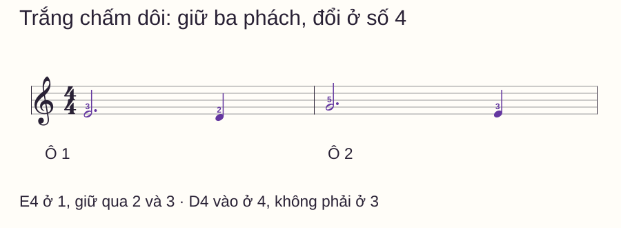
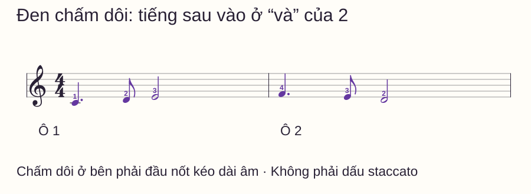
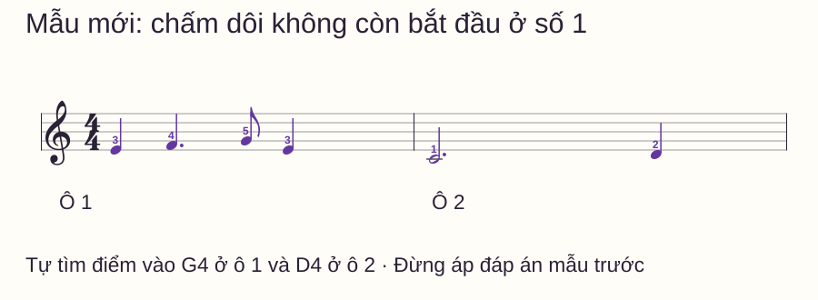

Nhịp và tiết tấu
Nốt chấm dôi piano: đếm đúng trước khi chuyển sang nốt sau
Một dấu chấm nhỏ khiến bạn chờ thêm nhưng không biết chờ đến đâu. Có lúc nốt tiếp theo đến quá sớm ở số 2; có lúc bạn kéo nốt chấm dôi thành hai phách trọn rồi câu nhạc trễ hẳn.
Một dấu chấm nhỏ khiến bạn chờ thêm nhưng không biết chờ đến đâu. Có lúc nốt tiếp theo đến quá sớm ở số 2; có lúc bạn kéo nốt chấm dôi thành hai phách trọn rồi câu nhạc trễ hẳn.
Cách sửa là đặt điểm kết thúc lên lưới thời gian, rồi chuẩn bị nốt sau trước điểm đó. Bài này dùng 4/4: bắt đầu từ nốt trắng chấm dôi dễ đếm bằng số nguyên, sau đó tới nốt đen chấm dôi đi với móc đơn. Các bài đều một tay, không pedal.
Trả lời nhanh
Một dấu chấm dôi ở bên phải đầu nốt làm tăng trường độ thêm một nửa giá trị của nốt gốc. Trong 4/4 với phách đen, trắng chấm dôi dài ba phách; đen chấm dôi dài một phách rưỡi. Nếu đen chấm dôi bắt đầu ở số 1, hãy giữ qua “1 và 2”, rồi chuyển sang móc đơn ở “và” của 2. Nốt sau không vào tại số 2 và cũng không đợi tới 3. Đếm đều các nửa phách và chuẩn bị ngón tiếp theo trước điểm chuyển; dấu chấm này kéo dài âm, không phải dấu staccato yêu cầu tiếng ngắn.
Tính độ dài rồi tìm điểm chuyển
Open Music Theory giải thích dấu chấm bổ sung một nửa giá trị gốc. Với một dấu chấm, bạn có thể dùng bảng sau cho các bài 4/4 này:
| Hình nốt | Giá trị gốc | Phần thêm | Tổng |
|---|---|---|---|
| Trắng chấm dôi | 2 phách | 1 phách | 3 phách |
| Đen chấm dôi | 1 phách | 1/2 phách | 1,5 phách |
Phải tính từ nốt có chấm, không lấy một con số cố định cộng cho mọi loại nốt. Dấu chấm dôi đặt ở bên phải đầu nốt; dấu staccato thường ở trên hoặc dưới nốt, thuộc ký hiệu cách phát âm. Nếu ảnh mờ tới mức không phân biệt vị trí, hãy tìm bản sheet rõ hơn trước khi luyện.
Bước 1: trắng chấm dôi và nốt đen
C4 là Đô giữa. Tay phải đặt 1–5 trên C4–D4–E4–F4–G4. Ngón 1 là cái, 5 là út. Đếm một ô dẫn vào với bốn phách đều.

Nói “E–giữ–giữ–D” theo các số 1–2–3–4 khi tập riêng ô 1. Sang ô 2, chơi G4 ở 1 và E4 ở 4. Cuối câu giữ E4 trọn phách cuối, nhả ở số 1 tưởng tượng của ô sau.
Nếu thường chuyển sớm ở số 3, chỉ gõ phách bằng tay kia hoặc dùng click từng phách. Số 3 là đầu phách thứ ba, chưa phải kết thúc ba phách của nốt bắt đầu tại 1.
Bước 2: đen chấm dôi và móc đơn

Đếm “1 và 2 và 3 và 4 và” với các phần bằng nhau. Nốt đen chấm dôi chiếm ba phần, móc đơn chiếm một phần, nốt trắng chiếm bốn phần. Tổng tám phần nửa phách là bốn phách.
| Ô | 1 | và | 2 | và | 3 | và | 4 | và |
|---|---|---|---|---|---|---|---|---|
| 1 | C4 | Giữ | Giữ | D4 | E4 | Giữ | Giữ | Giữ |
| 2 | F4 | Giữ | Giữ | E4 | D4 | Giữ | Giữ | Giữ |
Tập ô 1 trên một phím trước: đánh tại 1, “và” của 2 và 3. Khi đánh lại cùng phím, phải có nhả và tái nhấn để tạo âm mới, nhưng không thêm khoảng chờ vào phép đếm. Sau đó trả lại C4–D4–E4 để tách chuyện tìm nốt khỏi thời gian.
Nghe ba kiểu để phân biệt lỗi
Chỉ dùng ô 1 của mẫu đen chấm dôi. Lượt đúng: C4 ở 1, D4 ở “và” của 2, E4 ở 3. Giữ cùng lưới đếm rồi đối chiếu hai lỗi hay gặp:
- D4 vào ngay số 2: C4 mới dài một phách, phần thêm nửa phách đã mất.
- D4 vào số 3 rồi E4 ở “và” của 3: C4 bị kéo thành hai phách, cả phần sau đến muộn.
Không cần lặp lỗi để thuộc. Chỉ xác định mình đang mắc kiểu nào, gõ đúng điểm vào vài lượt rồi đàn lại. Nếu D4 ngắn bị vội sát E4, kiểm khoảng cách từ “và” của 2 tới 3 phải bằng một nửa phách như các phần khác.
Mẫu mới: nốt chấm dôi bắt đầu ở phách 2

Tự trả lời: F4 chiếm những phần nào, G4 vào ở đâu, D4 của ô 2 vào lúc nào? Đếm dẫn vào rồi thử. Không mang thói quen “móc đơn luôn ở và của 2” từ mẫu trước sang câu này.
Đáp án mẫu mới
Ô 1 E4 ở 1 và giữ phần “và”; F4 ở 2, giữ qua “và” của 2 và số 3; G4 ở “và” của 3; E4 ở 4. Ô 2 C4 ở 1, giữ ba phách rồi D4 ở 4. Tổng sáu điểm phát âm. Cả hai ô đều bốn phách, nhưng điểm vào móc đơn đã đổi.
Routine mười phút và bảng sửa lỗi
- 0–2 phút: tính hai loại nốt chấm dôi, chỉ đúng vị trí dấu chấm.
- 2–4 phút: chơi mẫu trắng chấm dôi, kiểm điểm chuyển ở số 4.
- 4–6 phút: gõ mẫu đen chấm dôi trên một phím rồi thêm cao độ.
- 6–8 phút: đếm nửa phách, sửa riêng điểm vào quá sớm hoặc quá muộn.
- 8–10 phút: thử mẫu mới và ghi điểm vào G4, D4 theo lưới đếm.
| Lỗi | Việc cần đổi |
|---|---|
| Mọi chấm đều được cộng một phách | Tính lại một nửa giá trị của nốt gốc |
| Đọc thành hai nốt bằng nhau | Đếm các nửa phách; cặp chấm dôi–móc đơn có tỷ lệ thời gian 3:1 |
| Giữ đúng nhưng chờ thêm trước nốt sau | Chuẩn bị ngón kế trong lúc đang giữ, không cộng thời gian chuẩn bị |
| Mẫu đầu đúng, mẫu mới sai | Tính từ điểm bắt đầu nốt, không học thuộc một vị trí “và” cố định |
Chưa cần thêm hai tay khi còn nhầm điểm chuyển một tay. Bài metronome giúp đặt click theo phách; bài dấu nối và dấu luyến phân biệt kéo dài bằng tie với cách nối câu. Đây là những lớp ký hiệu có thể gặp cùng nhau nhưng cần đọc riêng.
Nếu chưa giữ được các nửa phách bằng nhau, trở lại bài móc đơn đổi mật độ. Để phân biệt kéo dài âm với kết thúc âm, thử dấu lặng piano.
Câu hỏi thường gặp
Nốt trắng chấm dôi có phải ba phách không?
Trong 4/4 với phách đen của bài này, đúng: hai phách cộng thêm một. Luôn xác định đơn vị phách trước khi đổi ra số đếm.
Đen chấm dôi có phải hai phách không?
Không trong cách đếm đang dùng. Nó dài một phách rưỡi; thêm móc đơn nửa phách mới đủ hai phách.
Chấm dôi có làm xuất hiện tiếng mới không?
Không. Nó kéo dài cùng một nốt. Ở các phần “giữ” trong bảng, không bấm lại phím theo từng tiếng đếm.
Vì sao dấu chấm đôi khi yêu cầu tiếng ngắn?
Bạn có thể đang nhìn dấu staccato ở trên hoặc dưới nốt. Chấm dôi nằm bên phải đầu nốt và thuộc trường độ; cần xem rõ vị trí ký hiệu.
Có được đếm nhanh hơn để qua nốt móc đơn không?
Không đổi tốc độ lưới ngay tại nốt ngắn. Giữ các nửa phách đều, cho nốt chiếm đúng số phần tương ứng.
Có áp dụng nguyên cách đếm này cho 6/8 không?
Không. 6/8 thường tổ chức theo hai phách lớn chia ba. Quy tắc dấu chấm vẫn đúng về giá trị, nhưng cách tổ chức phách cần học riêng.
Nguồn và ghi chú biên soạn
- Open Music Theory — Rhythmic values: đối chiếu quy tắc một dấu chấm và quan hệ trường độ.
- Kiểm nguồn ngày 02/11/2026. Các câu nhạc, lưới, hình, hai lỗi đối chiếu và mẫu chuyển vị trí được biên soạn riêng. Chưa có giáo viên độc lập duyệt hoặc thử nghiệm học viên; bài không cam kết thời hạn học thành thạo.